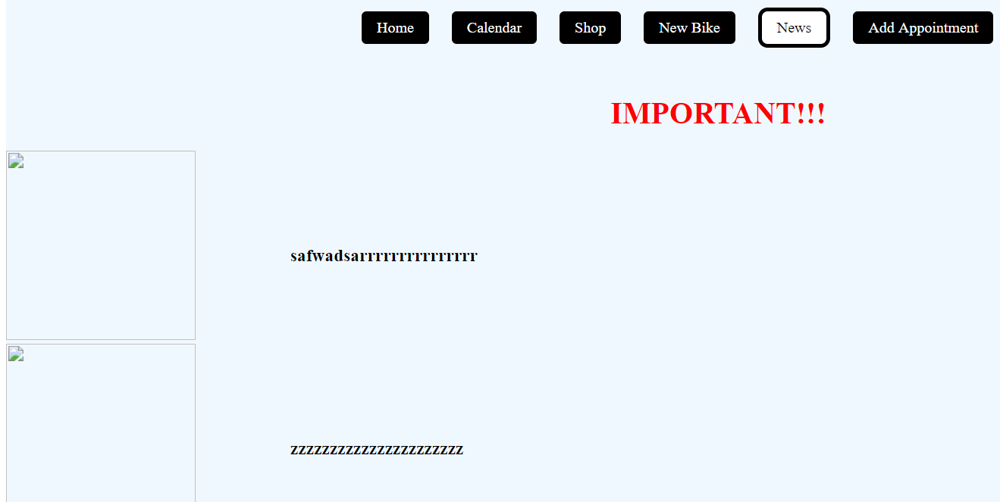

Sistem online de management al programărilor și stocurilor unui operatii de service de biciclete.
Primul lucru pe care il gasiti cand accesati aplicatia noastra este landing-page-ul. Acolo se gasesc o mica descriere alaturi de 2 butoane.
Daca nu aveti cont pe aplicatie, primul pas este sa va faceti cont.
Desigur, daca aveti deja un cont, atunci puteti accesa pagina de login.
Pasul de register este conceput cat se poate de simplu: un formular in care trebuie sa introduceti o adresa de email valida, o parola si un al treilea camp in care ne asiguram ca nu ati gresit parola.
In cazul in care aveti deja cont, trebuie doar sa accesati pagina de login unde veti gasi tot un formular in care trebuie sa introduceti adresa de email si parola.
Si in cazul register-ului si al login-ului, in urma completarii corecte a formularelor veti ajunge pe pagina de home a aplicatiei.
Aici va puteti gestiona bicicletele proprii.
In partea de sus a paginii veti gasi o bara de butoane care conduc catre diferite pagini ale aplicatiei.
Pe pagina calendarului puteti verifica cand este liber mecanicul pentru a putea face o programare.
Pe pagina magazinului puteti vedea toate piesele in stoc din magazinul service-ului.
Pe pagina de New-Bike veti gasi un formular, care contine detalii despre o bicicleta. La submit, detaliile bicicletei le veti gasi pe pagina de home.
Pe pagina de news sunt postate cele mai noi anunturi in legatura cu service-ul. Stirile importante sunt marcate corespunzator. O pagina pe care va sfatuim sa o urmariti.
Pe pagina de programari veti gasi un formular cu datele dumneavoastra si cu detaliile bicicletei si a problemei. Selectati o data la care ati vrea sa va faceti o programare si o ora (bineinteles, va sfatuim sa verificati calendarul si sa alegeti o data libera). Dupa ce apasati butonul de trimitere, veti fi informati ca cererea de programare a fost inregistrata. Mecanicul va procesa cererea dumneavoasta, iar daca totul este ok si o accepta, veti fi trecut in calendar. Daca in 24 de ore de la completare cererea nu apare in calendar, inseamna ca a fost o problema, si va rugam sa mai aplicati o data.